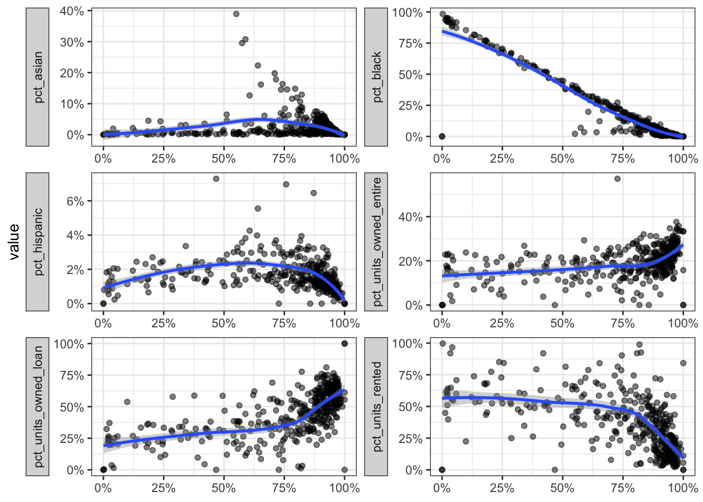
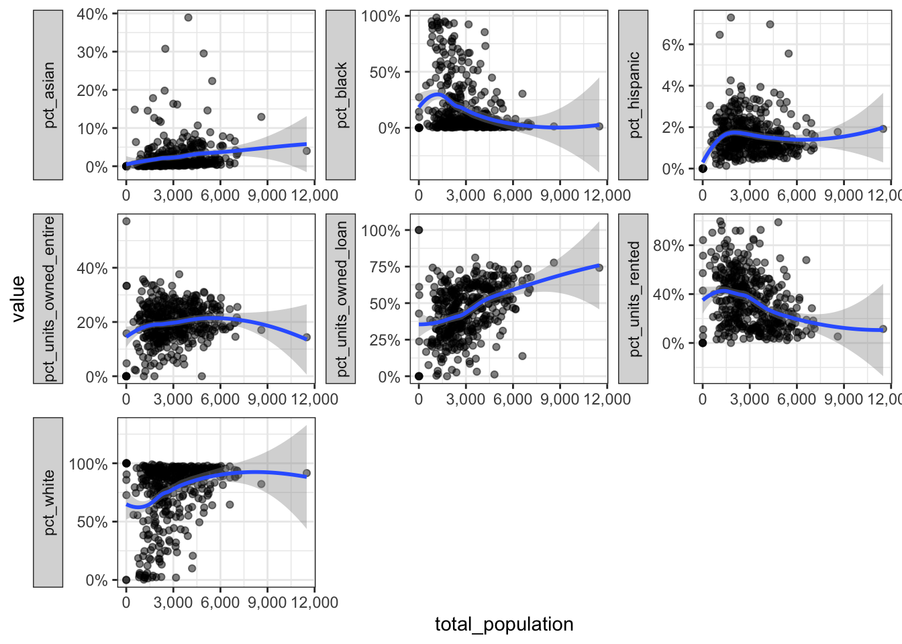
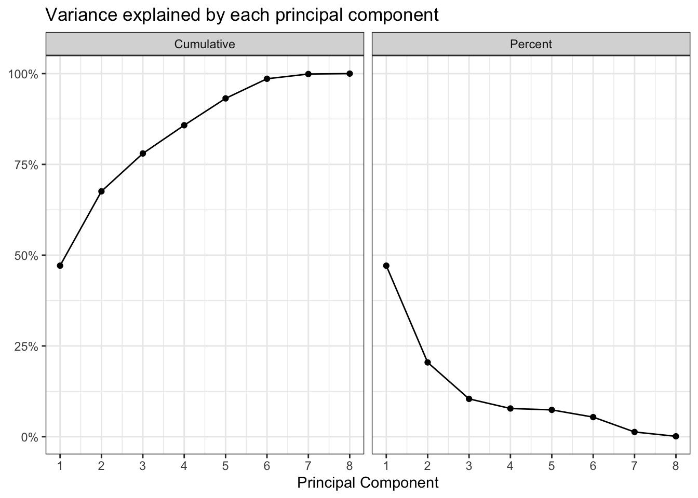
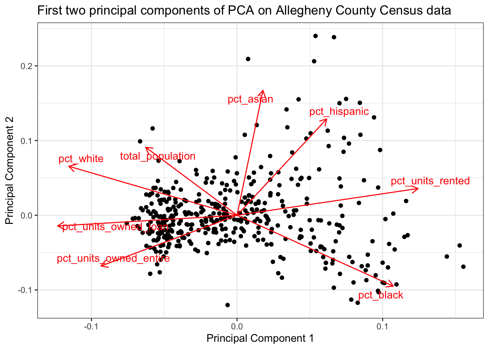
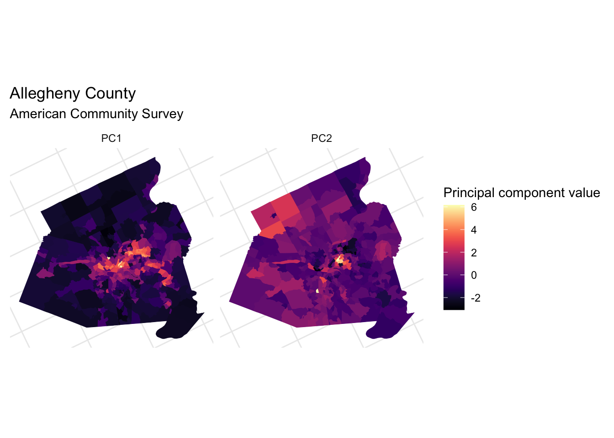
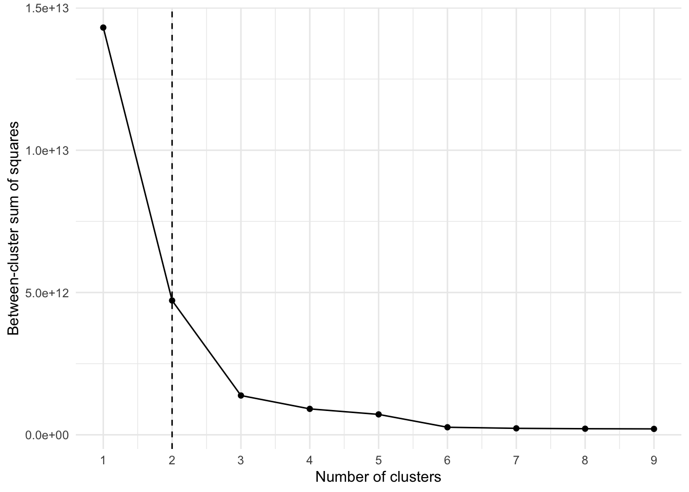
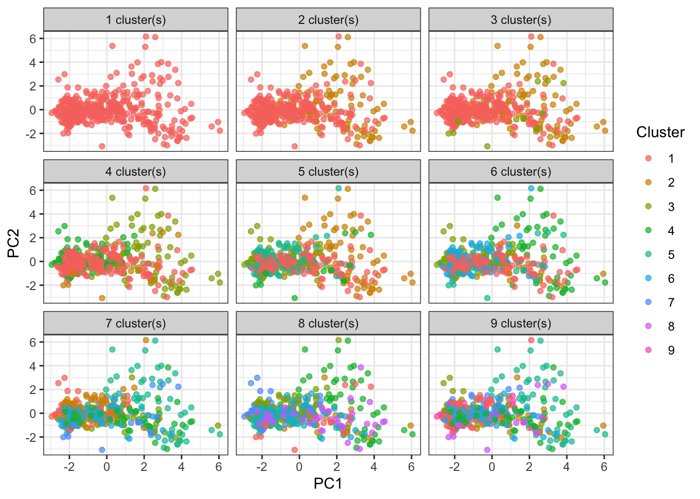
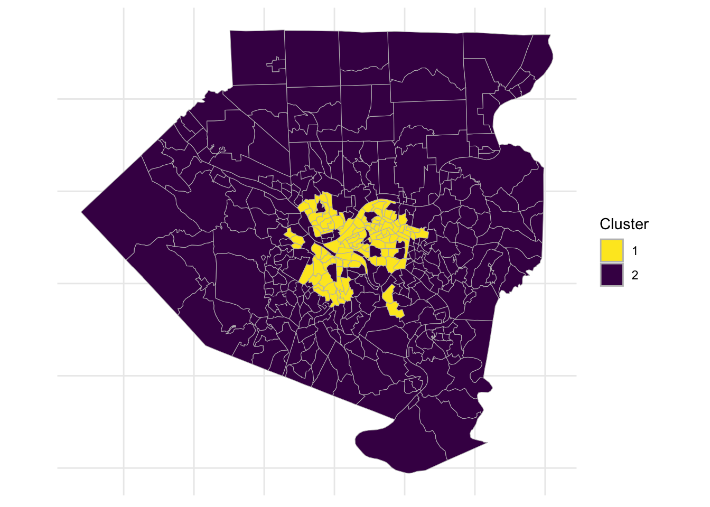

library(tidyverse)
library(tidycensus)
library(tigris)
library(sf)
library(broom)
library(ggfortify)
library(viridis)
library(janitor)
library(scales)
library(ggthemes)
options(tigris_use_cache = TRUE)
theme_set(theme_minimal())In this post I will use the census API discussed in the last post to cluster the Allegheny County census tracts using PCA and k-means.
Setup
census_vars <- load_variables(2010, "sf1", cache = TRUE)Census tracts are small geographic areas analogous to local neighborhoods. This is a map of all the tracts in Allegheny County, for reference:

Download data
This code downloads data about the ethnicities resident in the tracts and calculates them as a % of the tract population.
vars_demo <- c(white = "P005003",
black = "P005004",
asian = "P005006",
hispanic = "P004003")
#age vars men and women
#P0120003:P0120049
get_decennial(geography = "tract",
variables = vars_demo,
state = "PA",
county = "Allegheny",
year = 2010,
geometry = FALSE,
summary_var = "P001001") %>%
arrange(GEOID) %>%
mutate(value = value / summary_value) %>%
select(-summary_value) %>%
spread(variable, value) %>%
rename_at(vars("white", "black", "asian", "hispanic"), funs(str_c("pct_", .))) -> allegheny_demographics
allegheny_demographics <- replace(allegheny_demographics, is.na(allegheny_demographics), 0)This code downloads information about the housing stock in each tract, specifically what % of housing units are owned outright, owned with a loan, or rented.
vars_housing <- c(units_owned_loan = "H011002",
units_owned_entire = "H011003",
units_rented = "H011004")
get_decennial(geography = "tract",
variables = vars_housing,
state = "PA",
county = "Allegheny",
year = 2010,
geometry = FALSE,
summary_var = "H011001") %>%
arrange(GEOID) %>%
mutate(value = value / summary_value) %>%
select(-summary_value) %>%
spread(variable, value) %>%
rename_at(vars("units_owned_entire", "units_owned_loan", "units_rented"), funs(str_c("pct_", .))) -> allegheny_housing
allegheny_housing <- replace(allegheny_housing, is.na(allegheny_housing), 0)This code requests the total population of each tract.
#originally I used age-sex variables, but they were not useful
vars_age_total <- census_vars %>%
filter(name == "P012001")
get_decennial(geography = "tract",
variables = vars_age_total$name,
state = "PA",
county = "Allegheny",
year = 2010,
geometry = FALSE,
summary_var = "P012001") %>%
rename(var_id = variable) %>%
mutate(value = value / summary_value) %>%
spread(var_id, value) -> allegheny_age_sex
colnames(allegheny_age_sex) <- c("GEOID", "NAME", "summary_value", vars_age_total$label)
allegheny_age_sex %>%
clean_names() %>%
rename(GEOID = geoid,
NAME = name,
total_population = summary_value) -> allegheny_age_sex
allegheny_age_sex <- replace(allegheny_age_sex, is.na(allegheny_age_sex), 0)
allegheny_age_sex %>%
select(GEOID, NAME, total_population) -> allegheny_age_sexThis code requests the geometry of each tract that I will use to map them later.
get_decennial(geography = "tract",
variables = vars_housing,
state = "PA",
county = "Allegheny",
year = 2010,
geometry = TRUE) %>%
select(-c(variable, value)) %>%
distinct(GEOID) -> allegheny_geoThis joins the 4 dataframes together.
allegheny_geo %>%
left_join(allegheny_housing) %>%
left_join(allegheny_demographics) %>%
left_join(allegheny_age_sex) %>%
mutate(id = str_c(GEOID, NAME, sep = " | ")) -> allegheny Exploratory graph
This graph compares the percent of white residents to the remaining variables in the data. pct_white is on the x axis of each of the smaller charts. Note that each chart’s Y axis has its own scale. It is already obvious that pct_white and pct_black are negatively correlated with each other.
allegheny %>%
#st_set_geometry(NULL) %>%
st_drop_geometry() %>%
select(contains("pct")) %>%
gather(variable, value, -pct_white) %>%
ggplot(aes(pct_white, value)) +
geom_point(alpha = .5) +
geom_smooth() +
facet_wrap(~variable, scales = "free", nrow = 3, strip.position="left") +
scale_x_continuous(label = percent) +
scale_y_continuous(label = percent) +
labs(x = NULL) +
theme_bw() +
theme(strip.placement = "outside")
This code plots the total population against the other variables:
allegheny %>%
st_drop_geometry() %>%
select(contains("pct"), total_population) %>%
gather(variable, value, -total_population) %>%
ggplot(aes(total_population, value)) +
geom_point(alpha = .5) +
geom_smooth() +
facet_wrap(~variable, scales = "free", nrow = 3, strip.position="left") +
scale_x_continuous(label = comma) +
scale_y_continuous(label = percent) +
theme_bw() +
theme(strip.placement = "outside")
Prepare for PCA
This code prepares the data for PCA:
allegheny %>%
select(-c(id, GEOID, NAME)) %>%
st_drop_geometry() %>%
remove_rownames() -> allegheny_pca
allegheny_pca %>%
prcomp(scale = TRUE) -> pcpc %>%
tidy("pcs")# A tibble: 8 × 4
PC std.dev percent cumulative
<dbl> <dbl> <dbl> <dbl>
1 1 1.94 0.471 0.471
2 2 1.28 0.205 0.676
3 3 0.913 0.104 0.780
4 4 0.789 0.0778 0.858
5 5 0.769 0.0739 0.932
6 6 0.658 0.0540 0.986
7 7 0.323 0.0130 0.999
8 8 0.0961 0.00115 1 pc %>%
augment(data = allegheny_pca) %>%
as_tibble() %>%
mutate(GEOID = allegheny %>% pull(GEOID)) %>%
select(.rownames, GEOID, everything()) -> df_audf_au %>%
head()# A tibble: 6 × 18
.rownames GEOID pct_units_owned_entire pct_units_owned_loan pct_units_rented
<chr> <chr> <dbl> <dbl> <dbl>
1 1 420034… 0.213 0.750 0.0366
2 2 420034… 0.181 0.629 0.190
3 3 420034… 0.245 0.685 0.0692
4 4 420034… 0.336 0.501 0.164
5 5 420034… 0.147 0.418 0.435
6 6 420034… 0.168 0.432 0.400
# ℹ 13 more variables: pct_asian <dbl>, pct_black <dbl>, pct_hispanic <dbl>,
# pct_white <dbl>, total_population <dbl>, .fittedPC1 <dbl>,
# .fittedPC2 <dbl>, .fittedPC3 <dbl>, .fittedPC4 <dbl>, .fittedPC5 <dbl>,
# .fittedPC6 <dbl>, .fittedPC7 <dbl>, .fittedPC8 <dbl>This shows how the PCs explain the variance in the data. As explained earlier, the first few PCs explain most of the variance in the data.
pc %>%
tidy("pcs") %>%
select(-std.dev) %>%
gather(measure, value, -PC) %>%
mutate(measure = case_when(measure == "percent" ~ "Percent",
measure == "cumulative" ~ "Cumulative")) %>%
ggplot(aes(PC, value)) +
geom_line() +
geom_point() +
facet_wrap(~measure) +
labs(title = "Variance explained by each principal component",
x = "Principal Component",
y = NULL) +
scale_x_continuous(breaks = 1:8) +
scale_y_continuous(label = percent) +
theme_bw()
This shows how the PCA function rearranged the data to maximize the variance in the first few PCs. PC1 is largely defined by the percent of a tract that is white or black, the percent of housing units that are owned, and the total population of the tract. The “pct_white” and “pct_black” arrows point in opposite directions, which reflects Pittsburgh’s status as a segregated city.
PC2 explains less of the variance, and is influenced by the percent of a tract that is hispanic, asian, or black.
allegheny %>%
select(-c(id, GEOID)) %>%
st_drop_geometry() %>%
nest() %>%
mutate(pca = map(data, ~ prcomp(.x %>% select(-NAME),
center = TRUE, scale = TRUE)),
pca_aug = map2(pca, data, ~augment(.x, data = .y))) -> allegheny_pca2
allegheny_pca2 %>%
mutate(
pca_graph = map2(
.x = pca,
.y = data,
~ autoplot(.x, loadings = TRUE, loadings.label = TRUE,
loadings.label.repel = TRUE,
data = .y) +
theme_bw() +
labs(x = "Principal Component 1",
y = "Principal Component 2",
title = "First two principal components of PCA on Allegheny County Census data")
)
) %>%
pull(pca_graph)[[1]]
This code maps the first two PCs to the tracts.
df_au %>%
select(-.rownames) %>%
gather(variable, value, -c(GEOID)) -> df_au_long
allegheny_geo %>%
left_join(df_au) %>%
gather(pc, pc_value, contains(".fitted")) %>%
mutate(pc = str_replace(pc, ".fitted", "")) -> allegheny_pca_map
left_join(allegheny_map, allegheny_pca_map) %>%
filter(pc %in% c("PC1", "PC2")) %>%
ggplot(aes(fill = pc_value, color = pc_value)) +
geom_sf() +
facet_wrap(~pc) +
coord_sf(crs = 26911) +
scale_fill_viridis("Principal component value", option = "magma") +
scale_color_viridis("Principal component value", option = "magma") +
labs(title = "Allegheny County",
subtitle = "American Community Survey") +
theme(axis.text = element_blank())
Clustering with k-means
Next I will use k-means to cluster the PC data.
df_au_long %>%
filter(str_detect(variable, "PC")) %>%
spread(variable, value) -> allegheny_kmeansThis code clusters the data using 1 to 9 clusters.
kclusts <- tibble(k = 1:9) %>%
mutate(
kclust = map(k, ~kmeans(allegheny_kmeans, .x)),
tidied = map(kclust, tidy),
glanced = map(kclust, glance),
augmented = map(kclust, augment, allegheny_kmeans)
)clusters <- kclusts %>%
unnest(tidied)
assignments <- kclusts %>%
unnest(augmented)
clusterings <- kclusts %>%
unnest(glanced, .drop = TRUE)Based on this “elbow chart”, the optimum number of clusters is most likely 2.
ggplot(clusterings, aes(k, tot.withinss)) +
geom_line() +
geom_point() +
geom_vline(xintercept = 2, linetype = 2) +
scale_x_continuous(breaks = 1:9) +
labs(x = "Number of clusters",
y = "Between-cluster sum of squares")
We can visualize how the data would look if it were assigned to a different number of clusters. Clearly the clustering algorithm experiences diminishing returns after 2 or 3 clusters.
ggplot(assignments, aes(.fittedPC1, .fittedPC2)) +
geom_point(aes(color = .cluster), alpha = .7) +
facet_wrap(~ str_c(k, " cluster(s)")) +
scale_color_discrete("Cluster") +
labs(x = "PC1",
y = "PC2") +
theme_bw()
This code divides the data into 2 clusters and maps the clusters onto the tract map.
df_au_long %>%
filter(str_detect(variable, "PC")) %>%
spread(variable, value) -> allegheny_kmeans
kclust <- kmeans(allegheny_kmeans, centers = 2)
kclust %>%
augment(df_au_long %>%
filter(str_detect(variable, ".fitted")) %>%
spread(variable, value)) -> allegheny_kmeans
get_decennial(geography = "tract",
variables = vars_housing,
state = "PA",
county = "Allegheny",
year = 2010, geometry = TRUE) %>%
select(-c(variable, value)) %>%
distinct(GEOID) -> allegheny_geo
allegheny_geo %>%
left_join(allegheny_kmeans) -> alleghenyleft_join(allegheny_map, allegheny) %>%
ggplot(aes(fill = .cluster, color = .cluster)) +
geom_sf(color = "grey", size = .1) +
scale_fill_viridis("Cluster", discrete = TRUE, direction = -1) +
scale_color_viridis("Cluster", discrete = TRUE, direction = -1) +
theme(axis.text = element_blank())
The second cluster largely follows the city limits, but excludes areas such as Mount Washington, Squirrel Hill, and Shadyside. It also includes a few areas outside of the city like Duquesne and McKeesport.